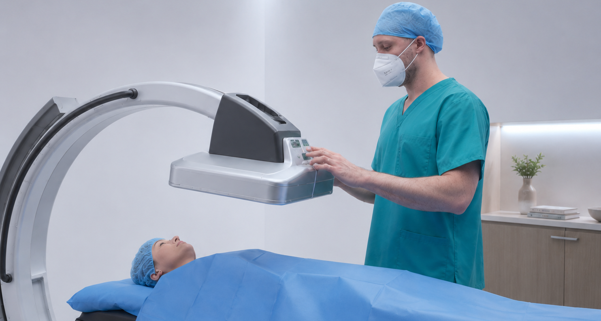

Digitale Echtzeit-Röntgenbildgebung mit dem FDX Visionary CS lite — dosisoptimiert, hochauflösend und ideal für dynamische Untersuchungen von Verdauungstrakt, Gelenken und mehr.
Digital real-time X-ray imaging with the FDX Visionary CS lite — dose-optimised, high-resolution and ideal for dynamic examinations of the digestive tract, joints and more.
Das FDX Visionary CS lite ist ein modernes digitales Durchleuchtungssystem mit hochauflösendem Flachdetektor. Es ermöglicht dynamische Röntgenuntersuchungen in Echtzeit bei minimierter Strahlenexposition — für präzise funktionelle Diagnostik.
The FDX Visionary CS lite is a modern digital fluoroscopy system with a high-resolution flat-panel detector. It enables dynamic X-ray examinations in real time with minimised radiation exposure — for precise functional diagnostics.
Bewegungsabläufe wie Schlucken, Magenentleerung oder Gelenkfunktion werden dynamisch in Echtzeit dargestellt.
Motion sequences such as swallowing, gastric emptying or joint function are displayed dynamically in real time.
Der digitale Flachdetektor ermöglicht eine deutliche Dosisreduktion gegenüber konventionellen Durchleuchtungssystemen bei gleichzeitig hoher Bildqualität.
The digital flat-panel detector enables a significant dose reduction compared to conventional fluoroscopy systems while maintaining high image quality.
Bilder werden digital gespeichert, sofort verfügbar und können direkt in den Befundbericht integriert werden. Kein Filmwechsel, kein Warten.
Images are stored digitally, immediately available and can be directly integrated into the report. No film change, no waiting.
Die Durchleuchtung eignet sich besonders für dynamische Untersuchungen, bei denen Bewegungsabläufe sichtbar gemacht werden müssen.
Fluoroscopy is particularly suited for dynamic examinations where movement sequences need to be visualised.
Magenpassage, Dünndarm-Passage, Kolon-Kontrasteinlauf, funktionelle Magendiagnostik
Gastric transit, small bowel transit, colonic contrast enema, functional gastric diagnostics
Schluckstörungen, Ösophagusdivertikei, Ösophagusstenosen, gastroösophagealer Reflux
Swallowing disorders, oesophageal diverticula, oesophageal stenosis, gastro-oesophageal reflux
Bildgestützte Injektionen in Gelenke (Wirbelsäule, Hüfte, Knie) — präzise Platzierung von Kortison oder Hyaluronsäure
Image-guided injections into joints (spine, hip, knee) — precise placement of cortisone or hyaluronic acid
Darstellung von Gelenkinnenflächen mit Kontrastmittel — Schulter, Knie, Hüfte, Sprunggelenk (oft in Kombination mit MRT)
Visualisation of joint surfaces with contrast medium — shoulder, knee, hip, ankle (often combined with MRI)
Miktionszysturethrographie (MCU), Blasen- und Harnröhren-Darstellung, vesikoureteraler Reflux
Micturating cystourethrography (MCU), bladder and urethra imaging, vesicoureteral reflux
Fistulographie, Sialographie (Speicheldrüsen), Dakryozystographie (Tränenwege), Fisteldarstellung
Fistulography, sialography (salivary glands), dacryocystography (tear ducts), fistula imaging
Die Durchleuchtung (Fluoroskopie) ist ein Röntgenverfahren, das kontinuierliche Echtzeit-Bilder erzeugt — ähnlich einem Röntgen-Video. So können Bewegungsabläufe (z.B. Schlucken, Magenentleerung) oder die genaue Platzierung von Injektionsnadeln in Echtzeit verfolgt werden. Häufig wird ein Kontrastmittel eingesetzt, um Hohlräume oder Gefässe sichtbar zu machen.
Fluoroscopy is an X-ray procedure that generates continuous real-time images — similar to an X-ray video. This allows movement sequences (e.g. swallowing, gastric emptying) or the precise placement of injection needles to be monitored in real time. A contrast medium is often used to make cavities or vessels visible.
Dank des modernen digitalen Flachdetektors im FDX Visionary CS lite ist die Strahlenbelastung deutlich geringer als bei älteren Systemen. Die Dosis wird so gering wie medizinisch möglich gehalten (ALARA-Prinzip). Für jeden Patienten wird die Strahlenexposition individuell minimiert. Bei Schwangeren wird die Durchleuchtung nur in klar begründeten medizinischen Fällen durchgeführt.
Thanks to the modern digital flat-panel detector in the FDX Visionary CS lite, the radiation dose is significantly lower than with older systems. The dose is kept as low as medically possible (ALARA principle). Radiation exposure is individually minimised for each patient. In pregnant women, fluoroscopy is only performed in clearly justified medical cases.
Bei bildgestützten Gelenkinfiltrationen wird unter Röntgenkontrolle (Durchleuchtung) eine Nadel präzise in ein Gelenk oder einen Schleimbeutel geführt, um dort Medikamente (z.B. Kortison, Hyaluronsäure, Lokalanästhetikum) direkt am Ort des Geschehens einzubringen. Die bildgestützte Führung erhöht die Treffsicherheit erheblich und verbessert so die Wirksamkeit der Behandlung.
In image-guided joint injections, a needle is precisely guided into a joint or bursa under X-ray control (fluoroscopy) to deliver medication (e.g. cortisone, hyaluronic acid, local anaesthetic) directly at the site. Image-guided guidance significantly increases accuracy and thus improves treatment effectiveness.
Vereinbaren Sie jetzt Ihren Termin — schnell, unkompliziert und in angenehmer Atmosphäre.
Book your appointment now — quickly, easily and in a pleasant atmosphere.
Swiss Open MRI · Schwyz
Unsere Radiologiepraxis befindet sich derzeit im Aufbau. Wir freuen uns, Sie ab Anfang 2028 in modernen Räumlichkeiten im Kanton Schwyz empfangen zu dürfen.